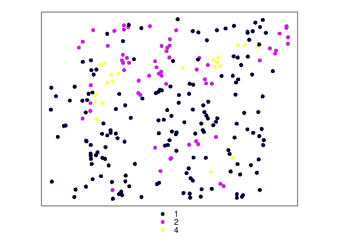
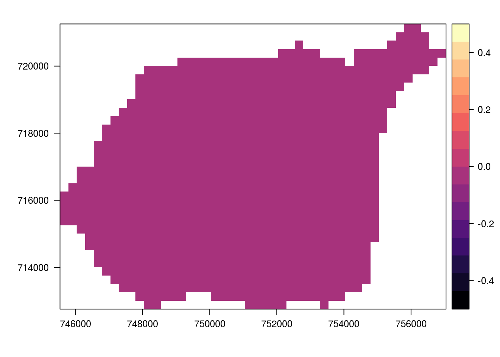

Rodział 2 Wprowadzenie
2.1 Wymagania wstępne
Oprogramowanie, pakiety i dane.
2.1.1 Oprogramowanie
2.1.2 Dane
- Adres
- Pliki + ryciny
2.2 R a dane przestrzenne
2.2.1 Pakiety
- GIS -
sp,rgdal,raster,rasterVis,rgeos,maptools,GeoXp,deldir,pgirmess - Geostatystyka -
gstat,geoR,geoRglm,fields,spBayes,RandomFields,vardiag - Inne -
ggplot2,corrplot,caret
pakiety <- c('caret', 'corrplot', 'dismo', 'fields', 'geoR', 'ggplot2', 'gridExtra', 'gstat', 'pgirmess', 'raster', 'rasterVis', 'rgdal', 'rgeos', 'sp')install.packages(pakiety)Pakiety R oraz zbiory danych używane w tej książce można również zainstalować poprzez:
devtools::install_github("nowosad/geostatbook")2.2.2 Reprezentacja danych nieprzestrzennych
- Wektory (ang. vector):
- liczbowe (ang. integer, numeric) - c(1, 2, 3) i c(1.21, 3.32, 4.43)
- znakowe (ang. character) - c(‘jeden’, ‘dwa’, ‘trzy’)
- logiczne (ang. logical) - c(TRUE, FALSE)
- czynnikowe (ang. factor) - c(‘jeden’, ‘dwa’, ‘trzy’, ‘jeden’)
- Ramki danych (ang. data.frame) - to zbiór zmiennych (kolumn) oraz obserwacji (wierszy) zawierających różne typy danych
- Macierze (ang. matrix)
- Listy (ang. list)
2.2.3 Reprezentacja danych przestrzennych
- Obiekty klasy
Spatial*z pakietusp- wszystkie z nich zawierają dwie dodatkowe informacje:- bounding box (
bbox) - obwiednia - określa zasięg danych - CRS (
proj4string) - układ współrzędnych
- bounding box (
- Najczęściej stosowane obiekty klasy
Spatial*toSpatialPointsDataFrame,SpatialPolygonsDataFrameorazSpatialGridDataFrame - Obiekty klasy
Raster*z pakieturaster, tj.RasterLayer,RasterStack,RasterBrick - Inne
2.2.4 GDAL/OGR
- http://www.gdal.org/
- GDAL to biblioteka zawierająca funkcje służące do odczytywania i zapiswania danych w formatach rastrowych
- OGR to bibioteka służąca to odczytywania i zapiswania danych w formatach wektorowych
- Pakiet
rgdalpozwala na wykorzystanie bibliotek GDAL/OGR w R
2.2.5 PROJ.4
- Dane przestrzenne powinny być zawsze powiązane z układem współrzednych
- PROJ.4 - to biblioteka pozwalająca na identyfiację oraz konwersję pomiędzy różnymi układami współrzędnych http://www.spatialreference.org/
2.2.6 EPSG
- Kod EPSG (ang. European Petroleum Survey Group) pozwala na łatwe identyfikowanie układów współrzędnych
- Przykładowo, układ PL 1992 może być określony jako:
“+proj=tmerc +lat_0=0 +lon_0=19 +k=0.9993 +x_0=500000 +y_0=-5300000 +ellps=GRS80 +towgs84=0,0,0,0,0,0,0 +units=m +no_defs”
- …lub też za pomocą kodu EPSG:
“+init=epsg:2180”
2.2.7 Układ geograficzny
- Proporcje pomiędzy współrzedną oznaczjącą długość geograficzną (X) a oznaczającą szerokość geograficzną (Y) nie są równe 1:1
- Wielkość oczka siatki jest zmienna
- Nie pozwala to na proste określanie odległości czy powierzchni
Jednostka mapy jest abstrakcyjna
Do większości algorytmów w geostatystyce wykorzystywane są układy współrzędnych prostokątnych płaskich
2.3 Import danych
2.3.1 Dane punktowe (format csv)
dane_punktowe <- read.csv('dane/punkty.csv')head(dane_punktowe)## srtm clc temp ndvi savi x y
## 1 223.7413 2 16.686657 0.5824910 0.34681170 750794.1 714358.7
## 2 182.1080 4 15.433375 0.1390970 0.04292461 754097.3 714523.3
## 3 207.2538 1 16.177960 0.4633545 0.31007461 754421.8 720854.1
## 4 172.1708 1 14.381898 0.5805432 0.38777806 750261.2 716601.2
## 5 225.0000 4 9.389477 0.2140123 0.08478602 748175.4 718660.5
## 6 260.5744 2 10.215618 0.5307761 0.32831149 750605.8 719174.1coordinates(dane_punktowe) <- ~x+y
summary(dane_punktowe)## Object of class SpatialPointsDataFrame
## Coordinates:
## min max
## x 745751.4 756397.3
## y 712639.5 721183.7
## Is projected: NA
## proj4string : [NA]
## Number of points: 241
## Data attributes:
## srtm clc temp ndvi
## Min. :146.6 Min. :1.000 Min. : 7.618 Min. :0.1391
## 1st Qu.:189.0 1st Qu.:1.000 1st Qu.:12.301 1st Qu.:0.4534
## Median :219.9 Median :1.000 Median :15.225 Median :0.5113
## Mean :214.6 Mean :1.442 Mean :15.846 Mean :0.4980
## 3rd Qu.:234.0 3rd Qu.:2.000 3rd Qu.:18.924 3rd Qu.:0.5560
## Max. :281.7 Max. :4.000 Max. :25.729 Max. :0.6547
## NA's :1 NA's :1
## savi
## Min. :0.04292
## 1st Qu.:0.28451
## Median :0.31848
## Mean :0.31309
## 3rd Qu.:0.35672
## Max. :0.46381
## proj4string(dane_punktowe) <- '+init=epsg:2180'
summary(dane_punktowe)## Object of class SpatialPointsDataFrame
## Coordinates:
## min max
## x 745751.4 756397.3
## y 712639.5 721183.7
## Is projected: TRUE
## proj4string :
## [+init=epsg:2180 +proj=tmerc +lat_0=0 +lon_0=19 +k=0.9993
## +x_0=500000 +y_0=-5300000 +ellps=GRS80 +towgs84=0,0,0,0,0,0,0
## +units=m +no_defs]
## Number of points: 241
## Data attributes:
## srtm clc temp ndvi
## Min. :146.6 Min. :1.000 Min. : 7.618 Min. :0.1391
## 1st Qu.:189.0 1st Qu.:1.000 1st Qu.:12.301 1st Qu.:0.4534
## Median :219.9 Median :1.000 Median :15.225 Median :0.5113
## Mean :214.6 Mean :1.442 Mean :15.846 Mean :0.4980
## 3rd Qu.:234.0 3rd Qu.:2.000 3rd Qu.:18.924 3rd Qu.:0.5560
## Max. :281.7 Max. :4.000 Max. :25.729 Max. :0.6547
## NA's :1 NA's :1
## savi
## Min. :0.04292
## 1st Qu.:0.28451
## Median :0.31848
## Mean :0.31309
## 3rd Qu.:0.35672
## Max. :0.46381
## 2.3.2 Dane poligonowe (formaty gisowe)
granica <- readOGR(dsn='dane', layer='granica', verbose=FALSE)
plot(granica)
2.3.3 Rastry
siatka_raster <- raster('dane/siatka.tif')
plot(siatka_raster)
2.4 Eksport danych
2.4.1 Zapisywanie danych wektorowych
writeOGR(poligon, dsn='nazwa_folderu', layer='nowy_poligon', driver='ESRI Shapefile')2.4.2 Zapisywanie danych rastrowych
writeRaster(siatka_raster, filename='nazwa_folderu/nowy_raster.tif')2.5 Wizualizacja danych 2D
2.5.1 Dane punktowe
plot(dane_punktowe)
spplot(dane_punktowe, 'temp')
spplot(dane_punktowe, 'srtm')
2.5.2 Dane punktowe - kategorie
dane_punktowe@data$clc <- as.factor(dane_punktowe@data$clc)
spplot(dane_punktowe, 'clc')
2.5.3 Rastry
levelplot(siatka_raster, margin=FALSE)
2.6 Tworzenie siatek
2.6.1 Siatki regularne
bbox(dane_punktowe)## min max
## x 745751.4 756397.3
## y 712639.5 721183.7extent(dane_punktowe)## class : Extent
## xmin : 745751.4
## xmax : 756397.3
## ymin : 712639.5
## ymax : 721183.7siatka <- expand.grid(x = seq(from = 745050, to = 757050, by = 500),
y = seq(from = 712650, to = 721650, by = 500))
coordinates(siatka) <- ~x + y
gridded(siatka) <- TRUE
proj4string(siatka) <- proj4string(dane_punktowe)siatka <- makegrid(dane_punktowe, cellsize=500)
names(siatka) <- c('x', 'y')
coordinates(siatka) <- ~x + y
gridded(siatka) <- TRUE
proj4string(siatka) <- proj4string(dane_punktowe)2.6.2 Siatki regularne
plot(siatka)
plot(dane_punktowe, add=TRUE)
2.6.3 Siatki nieregularne - klasa RasterLayer
granica <- readOGR(dsn='dane', layer='granica')## OGR data source with driver: ESRI Shapefile
## Source: "dane", layer: "granica"
## with 1 features
## It has 3 fieldssiatka_n <- raster(extent(granica))
res(siatka_n) <- c(500, 500)
siatka_n[] <- 0
proj4string(siatka_n) <- proj4string(granica)
siatka_n <- mask(siatka_n, granica)levelplot(siatka_n, margin=FALSE)
2.6.4 Siatki nieregularne - klasa SpatialPixelsDataFrame
siatka_n <- as(siatka_n, 'SpatialPointsDataFrame')
siatka_n <- siatka_n[!is.na(siatka_n@data$layer), ]
gridded(siatka_n) <- TRUE
plot(siatka_n)